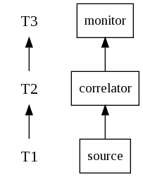
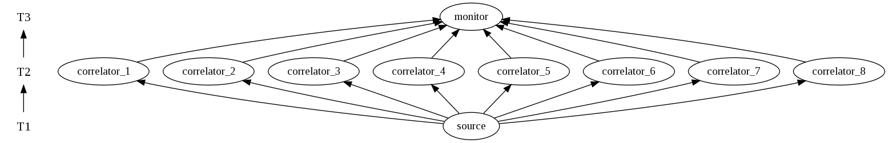
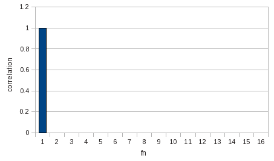
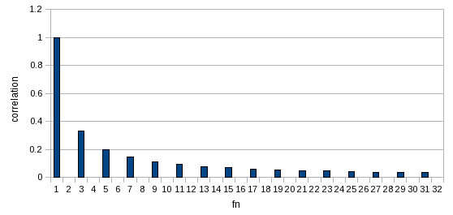
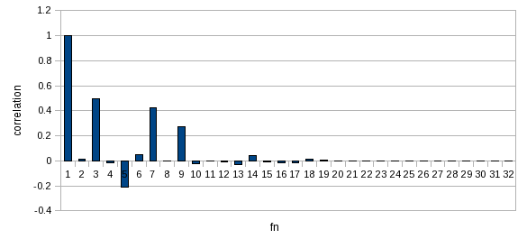

| Application version | beta01 |
| Trad4 version | 3.1.3 |
| Document version | beta02 |
| Author | schevans |
| Date | 04-06-2010 |
This is a concurrent model of the discrete Fourier transform. This allows us to decompose a particular sample into it's component frequencies. It's the inverse of additive_synth, and their iteration is shown below.
The principal of the discrete Fourier transform is that, given the base frequency of the sample, we calculate the amplitude of each harmonic using a process called correlation, in a way that allows us to reconstruct the sample using additive synthesis.
The way each harmonic is tested for correlation is that a pure sine wave of the frequency of that harmonic is multiplied by the sample we're analysing. This is not particularly intuitive so for further reading please see Steven W. Smith's excellent DSP book, available for free online and in all good bookshops. Correlation is described here, but you should probably also read the whole of chapter 8.

We have, form the bottom, the source object into which, then the correlator, lastly the monitor which writes out the frequencies domain report.

From the above diagram we can see how the correlators run concurrently. Each correlator is tasked with finding the correlation to a specific harmonic. The first correlator looks for the base frequency f1 (the frequency of the underlying sample). The next correlator looks for f2 - twice the base frequency, and so on.
When a sine wave such as sine_f1_h16.wav from additive_synth is run through the transform, we see that is is composed of a singe wave of the fundamental frequency as expected:

Recall the square wave from additive_synth was given by:
if ( id % 2 != 0 ) // Is odd id
level = 1.0 / id;
else // Is even id
level = 0.0;
Which gives:
| id | correlation |
| 1 | 1.0 |
| 2 | 0.0 |
| 3 | 0.333 |
| 4 | 0.0 |
| 5 | 0.2 |
| 6 | 0.0 |
| 7 | 0.111 |
| ... | ... |
And this is what we see when the square wave is analysed:

Likewise the triangle wave, which is given by:
if ( id % 2 != 0 ) // Is odd id
level = pow( -1.0, ( id - 1 ) / 2 ) * ( 1.0 / (id*id) );
else // Is even id
level = 0.0;
Which gives:
| id | correlation |
| 1 | 1.0 |
| 2 | 0.0 |
| 3 | -0.1111 |
| 4 | 0.0 |
| 5 | 0.04 |
| 6 | 0.0 |
| 7 | -0.204 |
| ... | ... |
Which is again what we see when the sample is analysed:
Next we're going to try something different. Up until now we've been analysing output samples from additive_synth where we know their composition. In this next example we're going to analyse a sample from a Yamaha CS1x.

The sample is Clarinet. We're then going to analyse it, and in order to verify it's worked correctly, we're then going to plug the resultant frequency domain report back into additive_synth and see if we can re-synthesise the sample.


From this we can see it's pretty close. So why aren't they closer? The likely answer is that the original sample contains some phase-shifted components which we would pick up if we were looking for cosine correlation, but we are only looking for correlation with the main sinusoidal components (because they make up the bulk of an audible tone). Scope for further work here.
To run the application:
1) Download and unpack the distribution
2) cd into trad4_v3_1_2/fourier_transform:
3) Source fourier_transform.conf:$ cd trad4_v3_1_2/fourier_transform
4) Start fourier_transform:fourier_transform$ . ./fourier_transform.conf
fourier_transform$ fourier_transform
To increase or decrease the number of threads used (the default is 4), set NUM_THREADS and re-start the application:
$ export NUM_THREADS=64 $ fourier_transform
To load a different waveform use the load_waveform command, with the two arguments being the waveform.wav file and the fundamental frequency of the sample you want analysed, which you must know in advance. E.g:
fourier_transform$ load_waveform.pl input/sine_f1_h16.wav 1.0
Or (where 261.626Hz equals middle C):
fourier_transform$ load_waveform.pl input/hammond_888000000.wav 261.626
This can be done while fourier_transform is running.